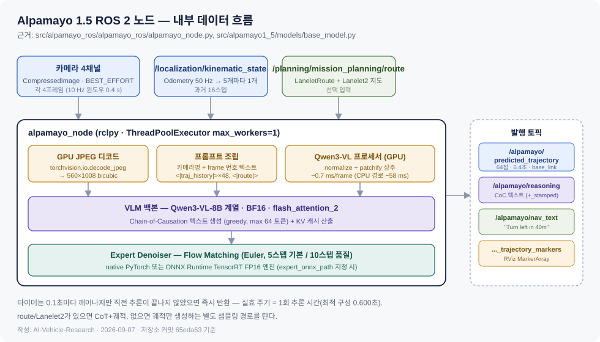
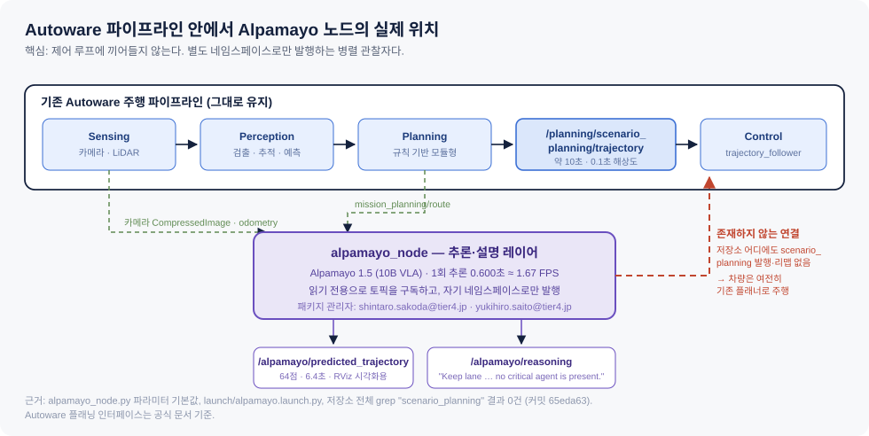
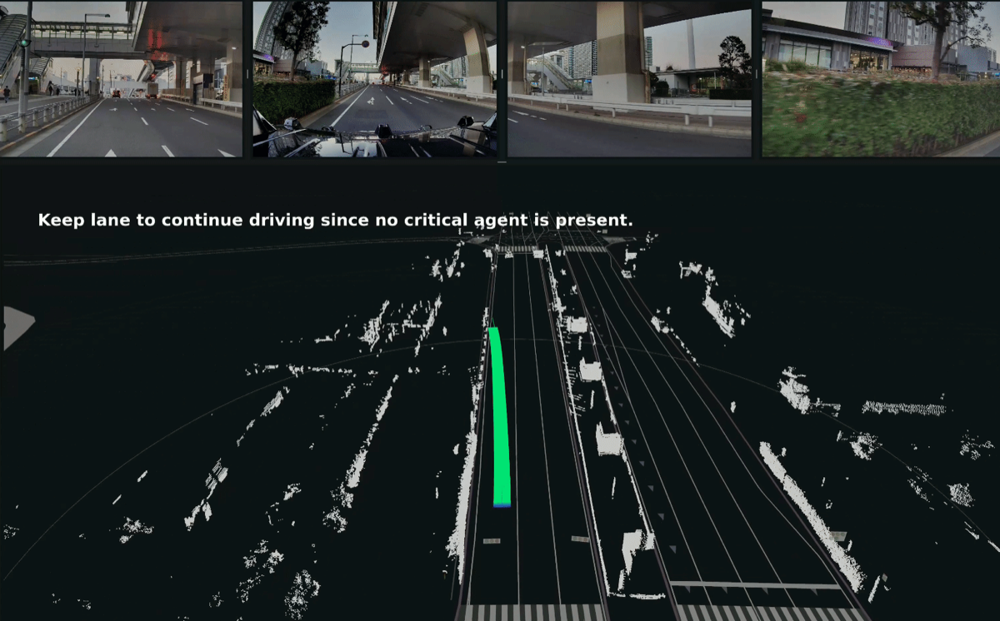
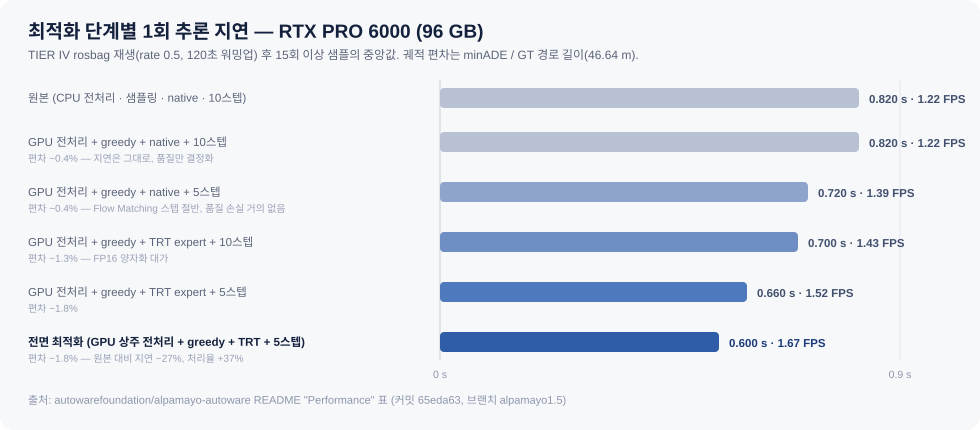

AI-Vehicle-Research · 심층 리서치
TIER IV × NVIDIA Alpamayo
— Autoware에 추론형 VLA를 얹다
발표는 "통합"이라 말했다. 코드는 다른 말을 한다. 저장소 전량을 읽고 확인한, 이 협력의 실제 모양.
scenario_planning 참조 — 플래너 미대체1. "TIER IV가 Alpamayo를 Autoware에 통합해 차가 그걸로 주행한다" → 아니다. 노드는 자기 네임스페이스로만 발행하고 Autoware 플래너·제어를 대체하지 않는다 (§5.3).
2. "Alpamayo는 diffusion 모델이다" → 코드상 실체는 Flow Matching(Euler 적분)이다 (§4.2).
3. "모델 가중치는 이제 상용 가능하다" → Alpamayo 2 Super는 그렇지만, 1.5 모델 카드는 2026-09-07 확인 시점에도 여전히 비상용이다 (§9.1).
01. 한눈 요약 — 판단 3줄
결론부터. 근거는 아래 각 절에서.
- 이 협력의 실물은 "모델 통합"이 아니라 "관찰 창구"다. TIER IV가 만든 것은 Autoware의 카메라·오도메트리·경로 토픽을 읽어 궤적과 자연어 추론을 별도 토픽으로 뱉는 ROS 2 노드 한 개다. 주행 제어 경로에는 손대지 않았다.
- 막는 것은 성능이다. 최적화를 다 넣어도 1회 추론 0.600초 = 1.67 FPS. Autoware 제어 루프가 요구하는 주기와 두 자릿수 배 차이가 난다. 그래서 "플래너"가 아니라 "설명·감독 레이어"에 머무를 수밖에 없다.
- 진짜 자산은 데이터 쪽 절반이다. Alpamayo 노드가 데모 수준인 것과 달리, Cosmos × Co-MLOps 조합은 이미 수치로 증명된 성과를 내고 있다. 이쪽이 TIER IV의 L4 상용화에 실제로 기여하는 축이다.
| 질문 | 답 | 근거 |
|---|---|---|
| 누가 코드를 썼나 | ROS 2 패키지는 TIER IV 엔지니어 2인이 작성 | 💻 package.xml 관리자 @tier4.jp 2인 |
| Autoware 본체에 머지됐나 | 아니다. Autoware Foundation 조직 아래 별도 포크 저장소 | 🔍 Discussion #6747 |
| 어느 모델을 쓰나 | nvidia/Alpamayo-1.5-10B 하드코딩 | 💻 alpamayo_node.py:53 |
| 차를 움직이나 | 아니다. /alpamayo/* 네임스페이스로만 발행 | 💻 저장소 전체 grep 0건 |
| 프로덕션 가능한가 | 저장소가 명시적으로 부정 | 🔍 README 면책 |
02. 타임라인 — 8개월 만에 벌어진 일
논문 공개에서 ROS 2 통합까지 3개월. 그리고 4월 이후 정지.
- 2025-10-30Alpamayo-R1 논문 arXiv 공개 (NVIDIA, 저자 42인) 🔍
- 2025-10Physical AI AV 데이터셋 v25.10 — 1,700시간 / 25개국 / 306,152클립 / 133 TB 🔍
- 2025-11-18NVlabs 상류 저장소 최초 커밋 💻
- 2026-01-23TIER IV가 ROS 2 노드를 올리고 Autoware Foundation 조직에 포크 공개 💻 🔍
- 2026-03-16~19NVIDIA GTC 2026 (산호세)
- 2026-03-18TIER IV·NVIDIA 협력 공식 발표 — Alpamayo → Autoware, Cosmos → Co-MLOps 🔍
- 2026-03-22~25Alpamayo 1.5 대응 코드 수정, Lanelet2 경로 기반 내비 텍스트 구현 💻
- 2026-03-25Isuzu·TIER IV·NVIDIA L4 버스(Erga 디젤/EV) 발표 📰
- 2026-04-23GPU 상주 전처리 + TensorRT expert 최적화 머지 — 이후 새 기능 커밋 없음 💻
- 2026-05-31Alpamayo 2 Super (34B) GTC Taipei 발표 🔍
- 2026-08-04~05Alpamayo 2 Super 상용 공개 (OpenMDW-1.1) 🔍
- 2026-08-07TIER IV, Co-MLOps × Cosmos 기술 보고 공개 🔍
개발 활동은 2026년 1월(초기 구현) → 3월(1.5 대응·발표) → 4월(성능 최적화)에 집중되고 그 이후 5개월간 새 기능이 없다. 발표는 3월에 정점을 찍었지만 코드는 4월에 멈췄다.
03. 등장 요소 정리 — 무엇이 무엇인지
발표문의 이름들이 서로 다른 계층에 속해 있어 뒤섞이기 쉽다.
NVIDIA 쪽
| 이름 | 계층 | 하는 일 |
|---|---|---|
| Alpamayo | AI 모델 (VLA) | 카메라 영상 → 자연어 추론 + 미래 궤적 |
| Cosmos | World Foundation Model 플랫폼 | 합성 데이터 생성·증강·검색 |
| DRIVE AGX Thor / Hyperion | 차량 탑재 하드웨어 | L4 연산 플랫폼 |
| Physical AI AV Dataset | 데이터셋 | 1,700시간 공개 주행 데이터 |
TIER IV 쪽
| 이름 | 계층 | 하는 일 |
|---|---|---|
| Autoware | 오픈소스 AD 스택 (ROS 2) | 인지·계획·제어 모듈형 파이프라인 |
| Co-MLOps | 데이터·MLOps 플랫폼 | 2024년 출범, 글로벌 데이터 공유·자동 라벨링 |
alpamayo-autoware | ROS 2 패키지 (포크) | 이번 협력의 코드 산출물 |
“To advance autonomous driving to the next generation, it is necessary to move toward reasoning-based systems capable of navigating the unpredictability of the real world.”
— Shinpei Kato, TIER IV 창업자·CEO 🔍
“By integrating NVIDIA Alpamayo into Autoware and utilizing NVIDIA Cosmos within their Co-MLOps platform, TIER IV is establishing a powerful blueprint for the ecosystem.”
— Marco Pavone, NVIDIA Autonomous Vehicle Research 디렉터 🔍
04. Alpamayo 모델 — 가져다 쓴 물건의 실체
보도자료는 "1"이라 하고 코드는 "1.5"를 부른다. 둘 다 맞다.
4.1 세대 비교
| Alpamayo 1 Nano | Alpamayo 1.5 (통합 대상) | Alpamayo 2 Super | |
|---|---|---|---|
| 파라미터 | 10B | 약 10.5B | 34B |
| 구성 | — | Cosmos-Reason2 백본 8.2B + 액션 디코더 2.3B | 32B급 VLM + 액션 디코더 |
| 백본 계열 | — | Qwen3-VL 계열 💻 | Cosmos 3 Super Reasoner |
| 공개 | 2026-01 전후 | — | 발표 05-31 / 상용 08-04 |
| 상용 사용 | — | 비상용 — "Commercial licensing available upon request" | OpenMDW-1.1, 상용 가능 |
보도자료는 TIER IV가 "Alpamayo 1의 얼리 어답터"라고 쓰지만 🔍, 저장소 코드는 nvidia/Alpamayo-1.5-10B를 하드코딩하고 브랜치명도 alpamayo1.5다 💻. 3월 발표 직전 커밋 abe1ab1 "Fixed the code for Alpamayo-1.5"가 전환점이다. 실제 통합 대상은 1.5다.
4.2 입출력과 내부 구조
- 입력 — 멀티 카메라 RGB(기본 4대), 텍스트 지시, 자차 운동 이력. 1080×1920을 받아 프로세서가 320×576으로 다운샘플. 시간 창 10 Hz × 0.4초 🔍
- 출력 — 추론 텍스트 + 6.4초 궤적 = 10 Hz 64 웨이포인트. 자차 좌표계 위치와 회전 행렬 🔍 💻
- 학습 데이터 — 80,000시간 멀티카메라 주행 영상 + 300만 건 Chain-of-Causation 추론 주석 🔍
매체와 모델 카드는 액션 디코더를 "diffusion"이라 부르지만, 실행되는 클래스는 FlowMatching이고 적분법은 euler, 참조 논문은 Flow Matching for Generative Modeling(arXiv:2210.02747)이다. 확산 계열의 넓은 범주 안에 있지만 정확히는 flow matching이다. (diffusion/flow_matching.py:22-50)
4.3 Chain of Causation이 일반 CoT와 다른 점
Alpamayo-R1 논문은 CoC를 "자동 라벨링과 human-in-the-loop 파이프라인으로 만든, 주행 행동과 정렬된 결정 근거형 인과 연결 추론 트레이스"로 정의한다 🔍. 일반 CoT가 그럴듯한 설명 문장을 만드는 데 그치는 반면, CoC는 실제로 취한 궤적과 짝지어 라벨링되어 추론과 행동의 일관성 자체를 학습·평가 대상으로 삼는다.
| 논문이 보고한 지표 | 개선 |
|---|---|
| 난도 높은 케이스 계획 정확도 | +12% |
| 폐루프 시뮬레이션 근접 조우율 | −35% |
| RL 사후학습 후 추론 품질 | +45% |
| 추론–행동 일관성 | +37% |
| 온보드 지연 | 99 ms |
이 99 ms는 논문의 온보드 측정치이며, 뒤에 나오는 저장소 벤치마크 600 ms와는 측정 조건이 다르다 (§6.2).
05. alpamayo-autoware 코드 해부
커밋 65eda63, 브랜치 alpamayo1.5, Python 6,125줄 전량 확인.

65eda63의 alpamayo_node.py, helper.py, base_model.py, diffusion/flow_matching.py.5.1 저장소의 정체
NVlabs/alpamayo의 포크. 상류 패키지명alpamayo_r1을alpamayo1_5로 갈아끼우고 ROS 2 패키지를 신규 추가 — 42파일, +4,938 / −791 💻- 생성 2026-01-23, 마지막 푸시 2026-08-06, 스타 140, 포크 14, 코드 라이선스 Apache-2.0 🔍
- ROS 2 패키지는 전적으로 TIER IV 저작.
package.xml관리자가shintaro.sakoda@tier4.jp,yukihiro.saito@tier4.jp이고 상류 NVIDIA 커밋은 2026-01-15에서 끊긴다 💻
5.2 노드가 실제로 하는 일
- 구독 — 카메라
CompressedImageN개(BEST_EFFORT),/localization/kinematic_state,/planning/mission_planning/route(:150-187) - 버퍼링 — JPEG 바이트를 그대로
torch.uint8로 적재해 CPU 디코드 회피. 오도메트리 50 Hz를 5개마다 1개씩 추려 10 Hz 16스텝 이력 구성 (:92-96,:359-364) - GPU 전처리 —
torchvision.io.decode_jpeg(device="cuda")→ 560×1008 bicubic. 픽셀이 GPU를 떠나지 않는다 (:381-386) - 프롬프트 조립 — 카메라 표시명·프레임 번호 텍스트 +
<|traj_history|>48토큰 +<|route_start|>…<|route_end|>. 학습 포맷을 그대로 재현 (helper.py) - 추론 — BF16 autocast로 VLM 롤아웃 + Flow Matching 샘플링. 내비 텍스트 유무로 CoT 생성 경로가 갈린다 (
:478-492) - 발행 —
autoware_planning_msgs/Trajectory(64점,dt=0.1, framebase_link), CoC 텍스트, 내비 텍스트, RViz 마커 (:498-519)
가속도·헤딩 레이트가 0으로 채워진다. 궤적 점의 속도는 인접 점 간 거리 ÷ 0.1초로 유한차분하지만, acceleration_mps2와 heading_rate_rps는 전부 0.0이다 (:555-566). 실제 제어기에 물릴 것을 전제한 메시지가 아니다.
inference_period_sec=0.1은 상한일 뿐이다. 타이머는 0.1초마다 깨어나지만 직전 추론이 끝나지 않았으면 그냥 반환한다 (:346-348). 실효 주기는 추론 시간 그 자체이고, launch 파일 기본값은 아예 1.0초다.
5.3 판정 — Autoware 플래너를 대체하는가

대체하지 않는다. 근거 셋 — ① 저장소 전체를 scenario_planning으로 grep하면 0건. Autoware가 제어로 넘기는 토픽은 /planning/scenario_planning/trajectory인데 노드는 이 이름을 발행하지도 리맵하지도 않는다. ② 발행 토픽 기본값이 전부 /alpamayo/ 네임스페이스다. ③ 궤적 길이도 다르다 — Autoware가 제어에 넘기는 trajectory는 "일반적으로 10초 길이, 0.1초 해상도"인데 Alpamayo 출력은 6.4초 64점이다.
"스택 교체"와 "관찰 창구"의 차이
두 표현의 갈림길은 하나다 — 모델 출력이 차량을 움직이느냐.
스택 교체라면 이렇게 된다. Autoware 파이프라인은 원래 이 흐름이다.
Sensing → Perception → Planning → /planning/scenario_planning/trajectory → Control → 조향·가감속end-to-end VLA를 "통합"한다는 말을 들으면 보통 이걸 상상한다. Perception·Planning 모듈들을 걷어내고 카메라 → 모델 → 궤적 한 방으로 대체하는 것. 모델이 낸 궤적이 그대로 scenario_planning/trajectory 자리에 들어가고 Control이 그걸 따라간다. 차가 모델 판단대로 움직인다.
실제로 된 것은 이렇다.
Sensing ─┬→ Perception → Planning → scenario_planning/trajectory → Control → 차량 주행
│ (여기까지 기존 그대로)
└→ alpamayo_node → /alpamayo/predicted_trajectory → RViz 화면
→ /alpamayo/reasoning → 텍스트 로그노드는 카메라·오도메트리·경로 토픽을 읽기만 하고, 결과를 /alpamayo/*라는 아무도 구독하지 않는 별도 이름으로 뱉는다. 소비자는 RViz(사람 눈)뿐이다. 차는 여전히 기존 규칙 기반 플래너로 간다.
교체하려면 무엇이 더 필요한가. 코드상 세 가지가 전부 안 돼 있다.
| 필요한 것 | 현재 상태 |
|---|---|
토픽 이름을 /planning/scenario_planning/trajectory로 리맵 | 저장소 전체에 그 문자열 0건 💻 |
| 궤적에 가속도·헤딩 레이트 채우기 | 전부 0.0 하드코딩 — 제어기가 쓸 수 없다 💻 |
| 제어 루프 주기 맞추기 | 1.67 FPS. 두 자릿수 배 모자람 🔍 |
세 번째가 근본 원인이다. 느려서 못 물리고, 못 물리니 관찰용으로 남는다.
L4 안전 논증에서 요구되는 것은 "왜 그렇게 판단했는가"의 기록이다. 관찰 창구는 그걸 만든다 — 기존 스택의 검증된 안전성은 건드리지 않은 채, 매 장면에 자연어 근거를 붙여 로그로 남긴다. 사고·해제 구간 사후 분석과 롱테일 장면 태깅에 곧바로 쓰인다.
교체를 못 해서 관찰에 머문 것이 아니라, 교체 이전 단계로서 관찰이 먼저 필요한 것에 가깝다. 다만 발표문의 "integrating it into Autoware"를 스택 교체로 읽으면 실제와 어긋난다.
즉 이 노드는 Autoware의 센서·경로 토픽을 읽기만 하는 병렬 관찰자다. 데모 화면이 그 성격을 그대로 보여준다 — 상단은 4개 카메라 입력, 하단은 기존 Autoware의 LiDAR 점군·차선 지도 위에 Alpamayo가 그린 초록 궤적과 자연어 판단이 오버레이된 RViz 화면이다.

/alpamayo/reasoning으로 나가는 CoC 텍스트다. 그림 출처: autowarefoundation/alpamayo-autoware images/alpamayo-autoware.gif 첫 프레임 (Apache-2.0).5.4 TIER IV가 추가한 것 — 두 갈래
(A) Autoware 접속 계층 (2026-01, 03) — ROS 2 노드 646줄 전체. 그리고 Lanelet2 지도 + LaneletRoute를 읽어 "Turn left in 40m" / "Continue straight" 같은 내비 지시문을 합성하는 로직 (:287-337). 모델이 학습 때 받았던 route 조건을 Autoware 미션 플래너 출력으로부터 만들어주는 어댑터로, 이 저장소에서 가장 Autoware-특화된 부분이다.
(B) 성능 최적화 계층 (2026-04) — GPU 상주 전처리, greedy 디코딩 + 5스텝 기본값("5-step Euler keeps trajectory ADE within ~1% of 10-step but cuts ~94 ms / inference"), 그리고 expert denoiser만 ONNX로 뽑아 ONNX Runtime의 TensorRT Execution Provider로 돌리는 경로. VLM 본체는 PyTorch 그대로 남는다 — "TensorRT로 모델을 변환했다"는 서술은 부정확하고, 정확히는 디노이저 서브그래프만 대체한 것이다. 빌드 스크립트는 SmoothQuant + INT8까지 지원하지만 노드는 enable_int8=False, enable_fp16=True로 호출한다.
06. 성능 — 숫자를 정직하게 읽기
정밀도를 지연으로 바꾸는 교환이 벤치마크 표에 그대로 드러난다.

6.1 벤치마크 원문
RTX PRO 6000(96 GB, SM120), 카메라 4대 × 시간 4프레임, 1080×1920. TIER IV rosbag을 rate=0.5로 재생하며 노드 로그의 "Alpamayo inference completed in X.XXs"를 15회 이상 수집한 중앙값 🔍.
| 구성 | 지연 | FPS | 궤적 편차 |
|---|---|---|---|
| 원본 (CPU 전처리·샘플링·native·10스텝) | 0.820 s | 1.22 | 기준 |
| GPU 전처리 + greedy + native + 10스텝 | 0.820 s | 1.22 | ~0.4% |
| GPU 전처리 + greedy + native + 5스텝 | 0.720 s | 1.39 | ~0.4% |
| GPU 전처리 + greedy + TRT + 10스텝 | 0.700 s | 1.43 | ~1.3% |
| GPU 전처리 + greedy + TRT + 5스텝 | 0.660 s | 1.52 | ~1.8% |
| 전면 최적화 | 0.600 s | 1.67 | ~1.8% |
읽어야 할 것: 5스텝 전환은 거의 공짜(편차 0.4% 유지, 100 ms 절감)지만, TRT FP16은 편차를 0.4% → 1.8%로 4배 넓히면서 60 ms를 산다.
6.2 논문 99 ms vs 저장소 600 ms
| 논문 99 ms | 저장소 600 ms | |
|---|---|---|
| 대상 | Alpamayo-R1 온보드 구성 | Alpamayo 1.5 10B, ROS 2 노드 end-to-end |
| 포함 범위 | ⚠️ 초록에 명시 없음 | JPEG 디코드 → 프롬프트 조립 → VLM 텍스트 생성 → 궤적 샘플링 → 메시지 변환 전체 |
| 하드웨어 | ⚠️ 초록에 명시 없음 | RTX PRO 6000 데스크톱 GPU |
결정적 차이는 CoC 텍스트 생성이다. 노드는 매 추론마다 최대 64토큰의 자연어 추론을 자기회귀로 뽑는다. 설명가능성이 이 협력의 핵심 가치인데, 그 설명을 만드는 비용이 곧 지연의 큰 몫이다. 설명을 포기하면 빨라지고, 유지하면 느리다.
6.3 그래서 어디에 쓸 수 있나
Autoware 플래닝이 제어에 넘기는 궤적은 0.1초 해상도로 갱신되는 실시간 신호다. 1.67 FPS는 그 대역에 들어갈 수 없다. 현실적인 용처는 셋이다.
- 오프라인 분석 — rosbag을 돌려 각 장면에 자연어 판단 근거를 붙인다. 사고·해제 구간 사후 분석에 바로 쓰인다.
- 온라인 감독 레이어 — 기존 플래너의 결정과 Alpamayo의 판단이 불일치하는 구간을 저속으로 감시해 플래그를 세운다.
- 데이터 큐레이션 — 롱테일 장면 자동 태깅. §7의 Cosmos-Reason 역할과 정확히 겹친다.
저장소 스스로도 못박는다 — "Alpamayo 1.5 is a pre-trained reasoning model for research purposes and is not a complete autonomous driving stack. It is not intended for use in production environments." 🔍
07. 데이터 쪽 절반 — Cosmos × Co-MLOps
이 협력에서 실제로 성과 수치가 나오는 축.
TIER IV 수석 엔지니어 Dan Umeda가 GTC 2026 세션 S81897에서 발표하고 2026-08-07 공식 기술 업데이트로 공개했다 🔍.
7.1 Co-MLOps의 기반
- 2024년 출범. 데이터 공유 + MLOps를 통합한 협업 프레임워크
- 수집 차량 센서: LiDAR 4대(각 120° 커버리지) + 다중 화각 카메라 8대
- 수집 범위: 일본 39개 도도부현, 127개 지점 — 도심·지방도·터널·공사구간·기상 변화
- 자동 라벨링 기반 모델 CoMET(Collaborative Multi-stage Ensemble-based Teacher): 카메라·LiDAR를 처리하는 12개 대규모 모델 앙상블, MoE 설계, TensorRT 배치 추론. 파놉틱 분할·신호등 인식·3D 객체 검출 생성
- 8단계 능동학습 루프: 자동 라벨링 → 데이터 태깅 → 공백 식별 → 데이터 생성 → 품질 검증 → 유사도 랭킹 → 불확실성 추정 → 프라이버시 익명화
7.2 Cosmos 3종의 배치
| 모델 | Co-MLOps에서의 역할 | 확인된 사양·성과 |
|---|---|---|
| Cosmos Reason | 검색·요약. 장면 설명·날씨·시간대·장소 유형·자차 거동을 구조화 JSON으로 출력. 자연어 검색과 ISO 34504 기준 시나리오 태깅 | 페타바이트급 영상 아카이브 처리 |
| Cosmos Predict 2.5 | 엣지케이스 생성. 텍스트·이미지·영상 프롬프트로 30초 영상 생성 | 2B / 14B 버전 |
| Cosmos Transfer 2.5 | 데이터 증강. 주간→야간, 맑음→우천/설경 등 다시점 일관 변환. Co-MLOps 파놉틱 마스크로 사후학습해 도메인 격차 보정 | 2B, 3D 차선·큐보이드 검출 최대 +60% |
7.3 증명된 수치 하나
노면에 누워 있는 사람, 소형 동물 같은 롱테일 대상은 실데이터로 학습이 안 된다. 개 검출 IoU — 실데이터만 0.671 → 실데이터 + Cosmos 합성 0.893 (+0.222).
이 보고서에서 확인한 유일하게 구체적인 "협력의 실효 성과"다. Alpamayo 노드 쪽에는 이에 상응하는 주행 성능 개선 수치가 아직 공개되지 않았다 ⚠️.
7.4 다음 단계
TIER IV는 Cosmos 3로 이행하며 일본 주행 환경 특화 파인튜닝을 진행 중이다. Cosmos 3 Nano 사후학습으로 엣지케이스 생성, 파인튜닝한 Gemma4-31B로 캡션 자동 변환, 7카메라 서라운드 다시점 영상 생성으로 확장, AutoQA·데이터 클렌징 AI 개발. 목표는 "엣지케이스 생성부터 자동 라벨링, AutoQA 품질보증까지 전 주기를 완전 자율로 도는 차세대 데이터 기반" 🔍.
08. 상용화 트랙 — Isuzu L4 버스
Alpamayo 노드가 연구 단계인 것과 별개로 진행되는 경로.
- 조합: Autoware 기반 TIER IV L4 소프트웨어 스택 + Isuzu Erga 버스 플랫폼(디젤/EV 양쪽) + NVIDIA DRIVE AGX Thor SoC 및 DRIVE Hyperion 📰 🔍
- 발표: GTC 2026 기간, 2026-03-25
- 명분: 일본의 운전자 부족 대응
“Deploying Level 4 autonomous driving on both our Erga EV and diesel models ensures that we provide versatile, sustainable, and highly efficient solutions.”
— Hiroshi Sato, Isuzu SVP 📰
Isuzu 버스 스택에 Alpamayo가 들어간다는 서술은 어느 출처에도 없다. 보도자료는 Alpamayo/Cosmos 통합과 Isuzu 버스 배치를 "Together with"로 병렬 서술한다. 두 트랙을 하나로 묶어 읽으면 안 된다.
구체 노선·상용 운행 개시 시점·초기 투입 대수도 어느 출처에도 공개되지 않았다. 일부 매체가 붙인 "2,000 TFLOPS / ASIL-D" 수치는 NVIDIA 원문에서 확인되지 않는다.
09. 한계와 리스크
도입을 검토한다면 먼저 읽어야 할 절.
9.1 라이선스 — 가장 헷갈리는 지점
| 항목 | 상태 |
|---|---|
alpamayo-autoware 추론 코드 | Apache-2.0 💻 |
| Alpamayo 1.5 가중치 | 라이선스는 OpenMDW-1.1이지만 카드 문구는 "ready for non-commercial use. Commercial licensing available upon request." (2026-09-07 확인) 🔍 |
| Alpamayo 2 Super 가중치 | OpenMDW-1.1, 파인튜닝·파생모델·상용 재배포 허용 🔍 |
| Physical AI AV 데이터셋 | 별도 라이선스 동의 필요. AV 개발 용도 한정, 법 집행·교통법규 단속 목적 사용 금지 조항 🔍 |
NVIDIA 블로그는 OpenMDW를 Alpamayo 패밀리 전체에 적용해 이전 릴리스도 상용 배포 가능해졌다고 서술하지만, 1.5 모델 카드와 저장소 README는 여전히 비상용을 명시한다. 상용 도입을 검토한다면 NVIDIA에 직접 확인해야 한다.
9.2 기술적 한계
| 리스크 | 내용 |
|---|---|
| 실시간성 | 1.67 FPS. 제어 루프 대역에 진입 불가 |
| 하드웨어 격차 | 벤치마크는 96 GB 데스크톱 GPU. 최소 요구도 24 GB VRAM — 차량 탑재 SoC로 내리려면 별도 축소 필요 |
| 메시지 불완전성 | 궤적의 가속도·헤딩 레이트가 0으로 채워짐 — 제어기 입력으로 쓸 수 없는 형태 💻 |
| 모델 다운로드 | 최초 실행 시 약 22 GB, HF 게이트 승인 필요 |
| 결합도 | autoware_planning_msgs, autoware_internal_debug_msgs, autoware_lanelet2_extension_python 의존. 다른 ROS 2 스택으로 옮기려면 메시지 계층부터 다시 써야 한다 |
| 지역 일반화 | 일본 특화 정밀도 수치 미공개 ⚠️. Co-MLOps 쪽에서 "일본 환경 특화 파인튜닝"을 별도 진행 중이라는 사실 자체가 격차의 방증 |
| 안전 인증 | ASIL 경로에서 생성형 VLA를 어떻게 다룰지에 대한 공식 서술 없음 ⚠️. DRIVE Hyperion의 "ASIL-D 인증 DriveOS"는 플랫폼 OS 얘기지 모델 얘기가 아니다 |
| 개발 정체 | 2026-04-23 이후 새 기능 커밋 없음. 이슈 5건 열림 |
9.3 거버넌스
alpamayo-autoware는 Autoware Foundation 조직 계정에 있지만 Autoware 본체에 머지된 컴포넌트가 아니라 독립 포크 저장소다. 공개 공지도 정식 릴리스 노트가 아니라 GitHub Discussion 형태였고, 관리자는 "커뮤니티 피드백과 테스트를 받아 개선하겠다"고 썼다. 위치를 정확히 말하면 공식 조직이 호스팅하는 참조 구현이다.
10. 시사점
이 조합에서 실제로 가져갈 것.
- 오픈소스 AD 스택의 프런티어 모델 흡수 속도. NVIDIA가 Alpamayo-R1 논문을 낸 지(2025-10-30) 3개월도 안 돼 Autoware Foundation 조직에 ROS 2 노드가 올라왔다(2026-01-23). LLM 생태계에서 익숙한 속도가 자율주행 스택에도 그대로 옮겨왔다.
- 그러나 "통합"의 의미가 다르다. 실제로 벌어진 일은 스택 교체가 아니라 관찰 창구 추가다. 모듈형 스택은 그대로 두고 그 옆에 추론 레이어를 붙여 설명가능성을 확보하는 것. L4 안전 논증에서 "왜 그렇게 판단했는가"를 남겨야 하는 상황을 생각하면 합리적인 첫 수다.
- 경쟁 지형에서의 위치. Waymo EMMA는 논문·연구 공개, Wayve는 OEM에 판매하는 폐쇄형 end-to-end 스택, 학계에는 OpenDriveVLA(AAAI 2026) 같은 재현 시도가 있다. 가중치·추론 코드·데이터셋·ROS 2 통합 예제가 한 줄로 이어져 공개된 조합은 Alpamayo × Autoware가 현재 유일에 가깝다. 성능이 아니라 접근성이 차별점이다.
- 국내 관점. 이 스택은 지금 그대로 가져와도 차를 움직이지 못한다. 반대로 말하면 재현 비용이 낮은 학습·평가용 자산이다. RTX 4090급 24 GB GPU 한 장과 rosbag만 있으면 자국 도로 데이터로 CoC 추론 품질을 정성 평가할 수 있다. §7의 Co-MLOps 방법론이 더 직접적으로 이식 가능한 교훈이다.
- 주시할 것. ① Alpamayo 2 Super의 Autoware 통합 여부 ②
alpamayo-autoware개발 재개 여부 ③ Isuzu 버스의 실제 운행 개시 ④ 1.5 가중치 라이선스 정리.
부록 A. 용어집
부록 B. 재현 절차
전제: ROS 2 Humble, Python 3.10.x, NVIDIA GPU 24 GB+ VRAM, CUDA 12.x+, uv, HF 게이트 승인 2건. 최초 실행 시 가중치 약 22 GB 다운로드.
git clone -b alpamayo1.5 https://github.com/autowarefoundation/alpamayo-autoware.git
cd alpamayo-autoware
uv venv a1_5_venv --python python3.10 # ROS 2 Humble 호환을 위해 3.10 고정
source a1_5_venv/bin/activate
uv sync --active
huggingface-cli login
source /opt/ros/humble/setup.bash
source ~/workspace/autoware/install/setup.bash
# rosbag 재생 평가
ros2 launch alpamayo_ros alpamayo.launch.py use_sim_time:=true
ros2 bag play <bag_path> --clock --rate 0.5| 파라미터 | 기본값 | 의미 |
|---|---|---|
camera_topics / camera_indices | 필수 | 0=전좌, 1=전방, 2=전우, 3=후좌, 4=후방, 5=후우, 6=전방 망원. launch 기본 [0,1,2,6] |
odometry_topic | /localization/kinematic_state | 50 Hz 가정, 5개마다 1개 추출 |
route_topic | /planning/mission_planning/route | 내비 지시문 생성용 (선택) |
lanelet2_map_path | "" | 지정하면 내비 지시문 활성화 |
num_diffusion_steps | 5 | 10이면 품질 우선 |
use_greedy_decode | true | false면 nucleus (top_p 0.98 / temp 0.6) |
expert_onnx_path | "" | 지정 시 ONNX Runtime TensorRT FP16 엔진 사용 |
max_generation_length | 64 | CoC 텍스트 토큰 예산 |
inference_period_sec | 0.1 (launch는 1.0) | 타이머 주기 상한 |
트러블슈팅 — ModuleNotFoundError: No module named 'rclpy._rclpy_pybind11' → venv를 Python 3.10으로 재생성. CUDA OOM → 24 GB+ GPU 사용, inference_period_sec 증가. Flash Attention 문제 → config.attn_implementation = "sdpa".
# TensorRT expert 엔진 빌드
uv sync --active --group trt
python3 scripts/build_trt_expert_engine.py --help
# 주요 옵션: --num-calibration-samples, --calibration-method, --smoothquant-alpha, --skip-validation부록 C. 미확인 항목과 검증 로그
확인하지 못한 것과, 소스가 충돌했을 때 어떻게 판정했는지.
미확인 항목
| # | 항목 | 상태 |
|---|---|---|
| 1 | Alpamayo 1.5 가중치의 최종 상용 가능 여부 | NVIDIA 블로그와 HF 모델 카드가 상충. NVIDIA 직접 확인 필요 |
| 2 | Isuzu L4 버스의 노선·시기·대수 | 어느 출처에도 없음 |
| 3 | Isuzu 버스 스택에 Alpamayo 포함 여부 | 언급 없음. 별개 트랙으로 서술됨 |
| 4 | Alpamayo 2 Super의 Autoware 통합 계획 | 저장소·발표 어디에도 언급 없음 |
| 5 | 2026-08-06 마지막 푸시의 내용 | alpamayo1.5 브랜치 최신 커밋은 2026-04-23. 다른 참조일 가능성 |
| 6 | 논문 "온보드 99 ms"의 측정 하드웨어·범위 | 초록에 명시 없음 |
| 7 | Alpamayo 노드 도입에 따른 주행 성능 개선 수치 | TIER IV 공개 자료 없음 |
| 8 | TIER IV 상용 스택에서의 Alpamayo 활용 여부 | 확인 불가 |
| 9 | Medium 기술 블로그 원문의 추가 서술·다이어그램 | Cloudflare 403. 동일 내용 보도자료로 대체 |
검증 로그 (판정 이력)
| 쟁점 | 소스 A | 소스 B | 판정 |
|---|---|---|---|
| 통합한 Alpamayo 버전 | 보도자료: "early adopter of Alpamayo 1" | 코드: Alpamayo-1.5-10B 하드코딩 | 둘 다 사실. 1로 시작해 3월에 1.5로 전환. 현재 통합 대상은 1.5 |
| VLM 백본 계열 | 서드파티: "Qwen2 기반" | 코드: Qwen/Qwen3-VL-8B-Instruct / 카드: Cosmos-Reason2 8.2B | Qwen3-VL 계열. Cosmos-Reason2가 Qwen3-VL 위에 구축된 것. "Qwen2"는 오기 |
| 생성 방식 | 카드·매체: "diffusion-based" | 코드: class FlowMatching, euler | Flow Matching. 넓은 확산 계열이나 정확한 명칭은 flow matching |
| TensorRT 적용 범위 | 서드파티: "TensorRT 양자화" | 코드: expert denoiser만 ONNX→ORT TRT EP | 부분 적용. VLM 본체는 PyTorch 유지 |
| 가중치 라이선스 | NVIDIA 블로그: 패밀리 전체 OpenMDW, 상용 가능 | HF 카드·README: 비상용 (2026-09-07 확인) | 미해결. 양쪽 원문 병기 |
| 벤치마크 인용 범위 | 서드파티: 2개 구성만 | README: 6개 구성 전체 표 | README 전체 표 채택. 중간 단계가 정밀도-지연 교환을 드러냄 |
| 데이터 규모 | 데이터셋 카드: 1,700시간 | 모델 카드: 학습 80,000시간 | 모순 아님. 전자는 공개 데이터셋, 후자는 학습 총량 |
| Alpamayo 2 Super 파라미터 | 일부 요약: "약 30억" | NVIDIA 원문: "34-billion-parameter" | 34B. 요약 과정의 오독 |
부록 D. 레퍼런스
전체 수집 기록과 원문 인용은 reference/references.md에 있다.
1차 — 코드·모델·데이터
- autowarefoundation/alpamayo-autoware — 브랜치
alpamayo1.5, 커밋65eda63전량 확인 - NVlabs/alpamayo — 상류 저장소
- nvidia/Alpamayo-1.5-10B — 모델 카드
- nvidia/PhysicalAI-Autonomous-Vehicles — 데이터셋 카드
- Autoware Foundation Discussion #6747 — 패키지 공개 공지, 2026-01-23
1차 — 공식 발표
- TIER IV accelerates AI-based Level 4 autonomous driving… (PRNewswire, 2026-03-18)
- Building a dataset foundation for autonomous driving with NVIDIA Cosmos (TIER IV, 2026-08-07)
- BYD, Geely, Isuzu and Nissan Adopt NVIDIA DRIVE Hyperion for Level 4 Vehicles (2026-03-16)
- NVIDIA Launches Alpamayo 2 Super Open Reasoning Model for Robotaxis
- NVIDIA Alpamayo 2 Super … Now Available for Commercial Use
학술·문서
- Alpamayo-R1 (arXiv:2511.00088) — NVIDIA, 2025-10-30 v1 / 2026-01-07 v2
- EMMA: End-to-End Multimodal Model for Autonomous Driving (arXiv:2410.23262) — Waymo
- OpenDriveVLA — AAAI 2026
- Flow Matching for Generative Modeling (arXiv:2210.02747) — 코드가 인용한 원 논문
- Autoware Planning component design
서드파티
- Isuzu deploys Level 4 autonomous buses (just-auto, 2026-03-25)
- Alpamayo 1.5 × Autoware 해설 (note.com / AI-Driven Lab, 2026-08-27) — 백본·라이선스 서술에 오차 있음, 검증 로그 참조
접근 실패
- TIER IV Tech Blog (Medium, 영문) — Cloudflare 403. 우회 시도(r.jina.ai, curl UA 위장) 모두 실패. PRNewswire 원문으로 대체
- TIER IV Tech Blog (Medium, 일문) — 403
- Automotive World 기사 — 403